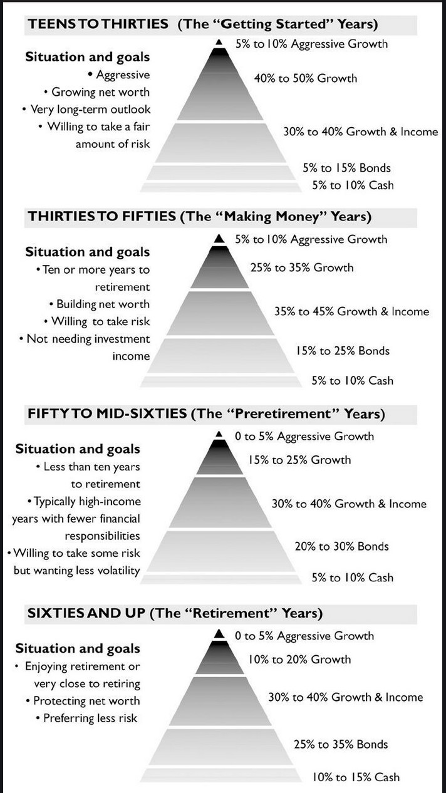

An interesting quote that Bach leaves in the
introduction is "Homeowners get rich; renters get poor".
I'm still not sure the actual meaning behind this quote,
but it definitely caught my attention, seeing as we are renters
and not home owners.
It would seem that the underlying factor to Mr. Bach's
investment plan would be to make it automatic, seeing as
he has repeated that statement several times throughout the introduction.
This chapter discussed the story of the first two "Automatic Millionaires"
that Bach ever met. According to them, and apparently a lot of other people
Every time you earn a dollar, you should make sure to pay yourself first.
According to the two, you should take 10% of your pay out of your paychecks
and put it into a savings account before you ever see it or have a chance to
spend it. You can start smaller, say 4% and slowly increase to the 10%
if needed. However, if you feel like you can go above 10%, don't be afraid to
do so. Pay off your mortgage as soon as possible. Interesting note
on Mortgage payments:
At first I wasn't sure what this tip really meant, but then I did some math. If you pay your mortgage by month, you will make 12 payments each year, obviously. However, if you make half payments every two weeks, you will end up making 13 payments a year. 52 weeks/2 weeks = 26 half-payments/2 = 13 full payments. Pretty cool advice.
This next tip is one Blaire has already implemented for us, but it is still worth writing down: No matter how big, you pay for your purchases in cash or you don't buy.In other words, don't pay in credit telling yourself "I'll pay it off eventually." The exception here is buying a house.
Some advice from the first automatic millionaires: "The trick to getting ahead
financially... is watching the small stuff - little spending habits you have that you'd
probably be better without." When going through the previous months spendings, ask
yourself, "was this purchase necessary?"
One way to get out of the "rat race" (working, earning, spending, repeat) is to stop
spending just because you can, or, worse, will be able to. Task: Go through the
previous months fincances and see if you could have saved at least $5.00 a day, rather
than spending it.
It is time to give up the budget. The reason budgets, especially the budgets I have tried to make, don't work is because they aren't fun. Sure, you can do it for a month or two, but they will inevitably fail, because they are terribly boring. So what is the secret to financial success if budgeting isn't it? The title of this chapter should give it away: pay yourself first.
Some would argue that legally, you have to pay the government first, but according to Bach, you should pay yourself legally before you even pay the taxes. Apparently, one way to do this legally is a pretax retirement account.
The question then becomes, how much should I pay myself? Simply put, you should be paying yourself 10-15% of your gross income. This works out to about one hour pay each day at your hourly rate.
This chapter seeks to answer to big questions about paying yourself first:
When opening an IRA account make sure to open a systematic investment plan. This will allow you to pull money directly from another account into your own account. There are two ways to do this:
Now that you have some money in an IRA account, you have to decide what to invest it in. The most important thing is not to put all your eggs in one basket. USe the investment pyramind provided below to help guide your retirement investing:
It is important to never put more than 25% in any one stock or company. Conservative investing requires investing no more than 5% in any one company, this will prevent a complete loss of equity if the company does tank. One thing to look for when opening an account is a target dated mutual funds. These accounts allow you to simply select a retirement year and a professional will manage the account with a space of percentages similar to those presented in the pyramid, meaning less work for you. There is a key factor to know about these funds: The Glide Path. This distinguishes between a "thru" fund (the account invests through your retirement) or a "to" fund (investments stop when you retire).
If your plan doesn't offer a target dated fund, then another option is a balanced fund or an asset allocation fund.